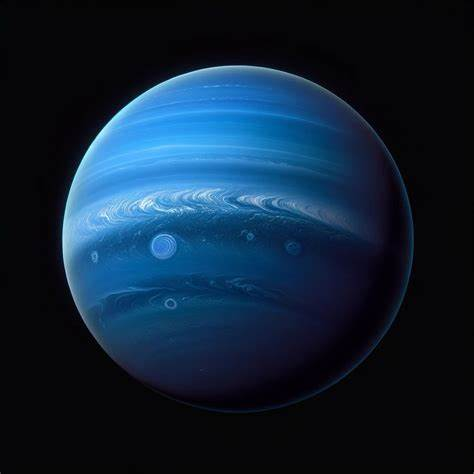

🪠Neptune: The Mysterious Ice Giant

~ 🔠General Information:
-Position from the Sun: 8th planet
-Diameter: Approximately 49,244 km (30,598 miles)
-Length of Day: About 16 hours
-Orbital Period: Approximately 165 Earth years
-Moons: At least 14 known moons, with Triton being the largest
-Rings: Five known rings composed of dust particles
~ 🌫️ Atmosphere and Composition:
-Atmosphere: Primarily hydrogen, helium, and methane
-Color: The methane in the atmosphere gives Neptune its blue hue
-Winds: Home to the fastest winds in the solar system, reaching speeds up to 1,500 mph (2,400 km/h)
-Great Dark Spot: A massive storm system similar to Jupiter's Great Red Spot